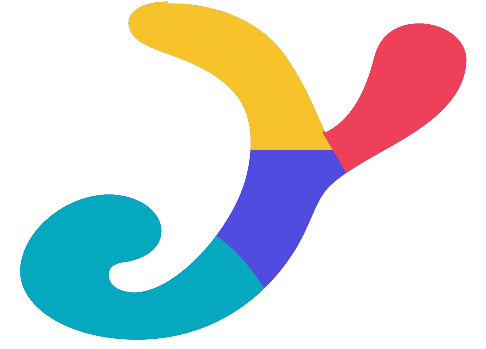
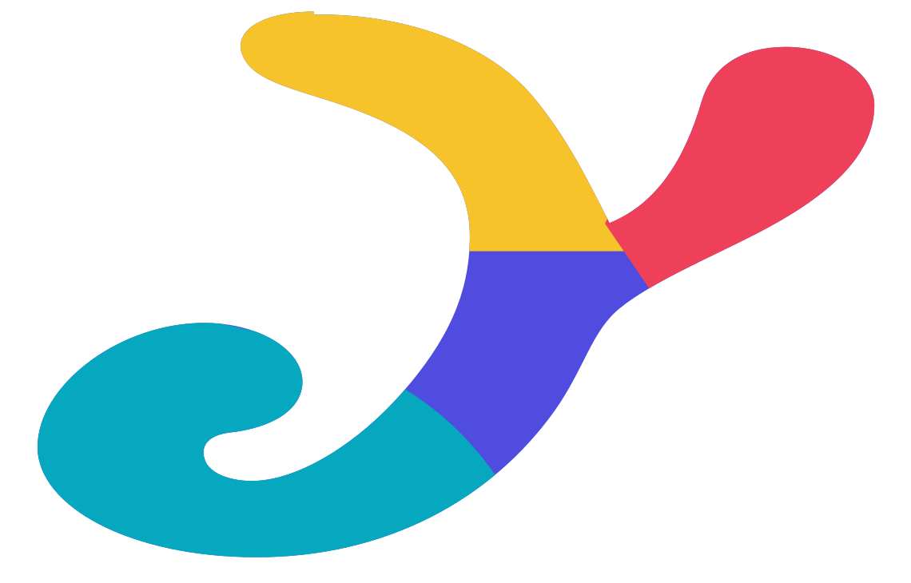
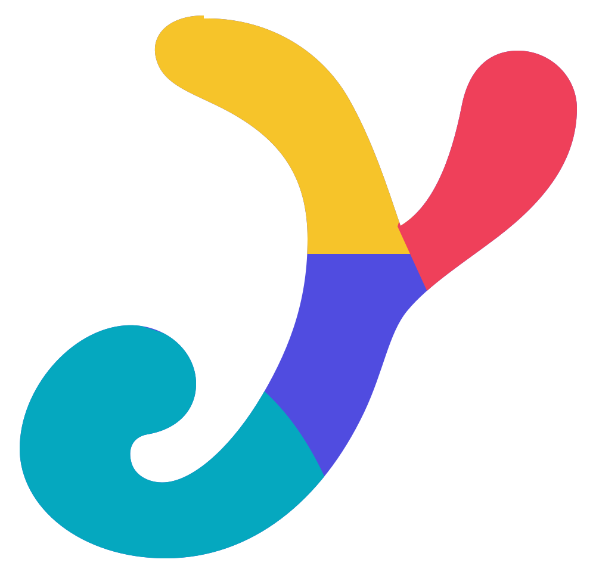

Same four-player Arcade colors; three shorter silhouettes tested as a 64, 32 and 24 px icon.

The existing gesture, widened and shortened while keeping its brushlike form.

A squatter variation that gives the J hook and Y tips more room in a square.
A tighter, thicker redraw with one short center and a rounder rebound.
